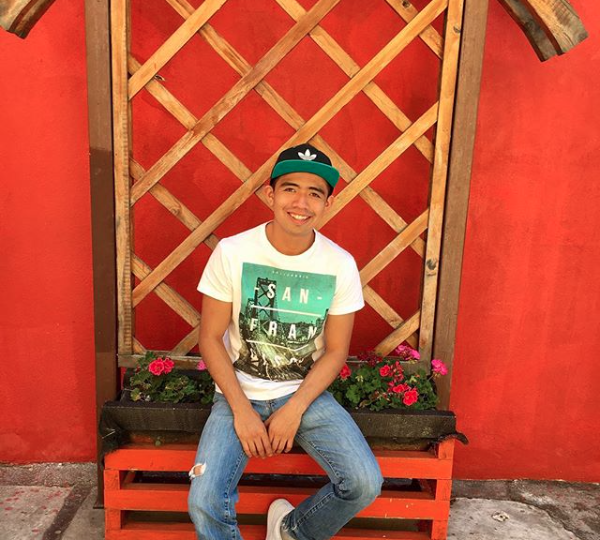

<!--
  Generated template for the AboutPage page.

  See http://ionicframework.com/docs/components/#navigation for more info on
  Ionic pages and navigation.
-->
<ion-header>

  <ion-navbar>
    <ion-title>about</ion-title>
  </ion-navbar>

</ion-header>


<ion-content padding>
  <ion-card>
    
    <ion-card-content>
      <ion-card-title>
        Mario Salinas
      </ion-card-title>
      <p>
        Apasionado por la tecnología. Ing. en Ciencias de la Computación y en amor con el desarrollo web.
      </p>

      <ion-item>
        <ion-icon name="logo-github" item-start></ion-icon>
        Repositories
        <ion-badge item-end>27</ion-badge>
      </ion-item>
      <ion-item>
        <ion-icon name="logo-instagram" item-start></ion-icon>
        Followers
        <ion-badge item-end>240</ion-badge>
      </ion-item>
      <ion-item>
        <ion-icon name="logo-twitter" item-start></ion-icon>
        Followers
        <ion-badge item-end>20</ion-badge>
      </ion-item>
    </ion-card-content>
  </ion-card>
</ion-content>
